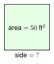
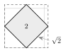

2.1 - Square Roots and Simplifying Radicals

A gardener has a square flower bed. The bed covers 50 square feet. How long is each side?
You need a number that gives 50 when you multiply it by itself. That number is not a whole number. It is a square root. In this lesson you learn to find square roots, estimate them, and write them in the simplest way. You will use them in every lesson of this unit.
Printable Guided Notes for this lesson (fill-in notes to print and write on)
🔥 Warm Up
Find \(9^2\) and \(13^2\).
Write 36 as a product of prime numbers.
Solve \(4x - 7 = 21\).
👥 Learn Together
2.1.1 - Perfect Squares and Square Roots
A square tile is 3 inches on each side. Its area is \(3 \times 3 = 9\) square inches. The number 9 is a perfect square. A perfect square is the square of a whole number.
Now go backward. A square has area 9 square inches. How long is its side? It is 3 inches. We say 3 is the square root of 9, and we write \(\sqrt{9} = 3\). The symbol \(\sqrt{\ \ }\) is the radical sign. The number under it is the radicand.

Here are the perfect squares you should know. Learn them. You will see them all unit long.
| \(n\) | 1 | 2 | 3 | 4 | 5 | 6 | 7 | 8 | 9 | 10 | 11 | 12 | 13 | 14 | 15 |
|---|---|---|---|---|---|---|---|---|---|---|---|---|---|---|---|
| \(n^2\) | 1 | 4 | 9 | 16 | 25 | 36 | 49 | 64 | 81 | 100 | 121 | 144 | 169 | 196 | 225 |
\(\sqrt{49} = 7\). We do not write \(-7\). Both \(7 \cdot 7\) and \((-7) \cdot (-7)\) equal 49, but the radical sign asks for the positive root only.
Example 1: Find each square root.
\(\sqrt{64}\). Think: what number times itself is 64? \(8 \cdot 8 = 64\), so \(\sqrt{64} = 8\).
\(\sqrt{144} = 12\), because \(12 \cdot 12 = 144\).
A square tile has area 81 square inches. Its side length is \(\sqrt{81} = 9\) inches.
\(\sqrt{121}\)
\(\sqrt{225}\)
\(\sqrt{121} = 11\)
\(\sqrt{225} = 15\)
Most numbers are not perfect squares. Look at this tilted square on a grid. Its corners sit on the grid points. Cut off the four small triangles and the area is 2 square units. So the side length is \(\sqrt{2}\). No whole number times itself gives 2.

2.1.2 - Estimating Square Roots
The area of the garden is 50 square feet, and 50 is not a perfect square. But \(49 < 50 < 64\), so \(7 < \sqrt{50} < 8\). The side is a little more than 7 feet.
To decide if the root is closer to 7 or to 8, test the middle, \(7.5\). Since \(7.5^2 = 56.25\), a radicand less than \(56.25\) has a root closer to 7.

Example 3: Estimate \(\sqrt{50}\). Then use a calculator and round to the nearest tenth.
\(7^2 = 49\) and \(8^2 = 64\). So \(\sqrt{50}\) is between 7 and 8.
Test the middle: \(7.5^2 = 56.25\). Since \(50 < 56.25\), \(\sqrt{50}\) is closer to 7.
Calculator: \(\sqrt{50} \approx 7.071\). To the nearest tenth, \(\sqrt{50} \approx 7.1\).
\(6^2 = 36\) and \(7^2 = 49\), so \(\sqrt{45}\) is between 6 and 7. Since \(6.5^2 = 42.25\) and \(45 > 42.25\), it is closer to 7. Calculator: \(\sqrt{45} \approx 6.7\).
\(\sqrt{40}\) is not \(40 \div 2\). Square roots are much smaller than the number. \(6^2 = 36\) and \(7^2 = 49\), so \(\sqrt{40}\) is a little more than 6.
2.1.3 - Simplifying Square Roots
The garden side \(\sqrt{50}\) can be written a shorter way. \(50 = 25 \cdot 2\), and 25 is a perfect square. So \(\sqrt{50} = \sqrt{25} \cdot \sqrt{2} = 5\sqrt{2}\).
The rule: \(\sqrt{a \cdot b} = \sqrt{a} \cdot \sqrt{b}\) for \(a\) and \(b\) that are 0 or more. A radical is simplified when the radicand has no perfect square factor except 1. We usually give answers in this form. We call it the exact answer.
Example 5: Simplify \(\sqrt{72}\) two ways.
Method 1: perfect square factor. \(72 = 36 \cdot 2\).
\[ \sqrt{72} = \sqrt{36} \cdot \sqrt{2} = 6\sqrt{2} \]
Method 2: prime factors. \(72 = 2 \cdot 2 \cdot 2 \cdot 3 \cdot 3\). Circle the pairs: \((2 \cdot 2)\) and \((3 \cdot 3)\). One 2 is left over.
\[ \sqrt{72} = 2 \cdot 3 \cdot \sqrt{2} = 6\sqrt{2} \]
Example 6: Simplify each square root.
\(\sqrt{48}\). The largest perfect square factor is 16. \(\sqrt{48} = \sqrt{16} \cdot \sqrt{3} = 4\sqrt{3}\).
\(\sqrt{180}\). Prime factors: \(180 = 2 \cdot 2 \cdot 3 \cdot 3 \cdot 5\). The pairs give \(2 \cdot 3 = 6\), and 5 is left over. So \(\sqrt{180} = 6\sqrt{5}\).
\(\sqrt{30}\). The factors of 30 are 1, 2, 3, 5, 6, 10, 15, 30. None of them is a perfect square except 1. So \(\sqrt{30}\) is already simplified.
\(\sqrt{98}\)
\(\sqrt{150}\)
\(\sqrt{98} = \sqrt{49} \cdot \sqrt{2} = 7\sqrt{2}\)
\(\sqrt{150} = \sqrt{25} \cdot \sqrt{6} = 5\sqrt{6}\)
The side of the garden is \(\sqrt{50} = 5\sqrt{2}\) feet. That is about \(5 \cdot 1.414 = 7.07\) feet, which agrees with the estimate between 7 and 8.
A number in front of a radical means multiply. \(5\sqrt{2}\) is \(5 \cdot \sqrt{2}\). To simplify \(3\sqrt{8}\), first simplify \(\sqrt{8} = 2\sqrt{2}\). Then multiply: \(3 \cdot 2\sqrt{2} = 6\sqrt{2}\).
2.1.4 - Multiplying, Adding, and Rationalizing
Multiply radicals by multiplying the numbers in front and multiplying the radicands: \(\sqrt{3} \cdot \sqrt{12} = \sqrt{36} = 6\). Then simplify.
Add radicals only when the radicands are the same. These are like radicals, like \(3x + 5x = 8x\). So \(3\sqrt{2} + 5\sqrt{2} = 8\sqrt{2}\). If the radicands differ, simplify first. You may find they match.
Rationalize: a simplified answer has no radical in the denominator. Multiply the top and bottom by that radical. In Unit 6 we need this step often.
Example 8: Multiply and simplify: \(2\sqrt{3} \cdot 5\sqrt{6}\).
Numbers in front: \(2 \cdot 5 = 10\). Radicands: \(\sqrt{3} \cdot \sqrt{6} = \sqrt{18}\).
\(\sqrt{18} = \sqrt{9} \cdot \sqrt{2} = 3\sqrt{2}\).
\[ 2\sqrt{3} \cdot 5\sqrt{6} = 10 \cdot 3\sqrt{2} = 30\sqrt{2} \]
Example 9: Add: \(\sqrt{8} + \sqrt{18}\).
The radicands differ, so simplify first. \(\sqrt{8} = 2\sqrt{2}\) and \(\sqrt{18} = 3\sqrt{2}\).
Now they are like radicals: \(2\sqrt{2} + 3\sqrt{2} = 5\sqrt{2}\).
Example 10: Rationalize the denominator: \(\dfrac{6}{\sqrt{2}}\).
\[ \dfrac{6}{\sqrt{2}} \cdot \dfrac{\sqrt{2}}{\sqrt{2}} = \dfrac{6\sqrt{2}}{2} = 3\sqrt{2} \]
We multiplied by \(\dfrac{\sqrt{2}}{\sqrt{2}}\), which equals 1, so the value did not change.
\(\sqrt{2} \cdot \sqrt{14}\)
\(4\sqrt{5} + 2\sqrt{5}\)
\(\dfrac{9}{\sqrt{3}}\)
\(\sqrt{28} = 2\sqrt{7}\)
\(6\sqrt{5}\)
\(\dfrac{9\sqrt{3}}{3} = 3\sqrt{3}\)
Jamal writes \(\sqrt{9 + 16} = \sqrt{9} + \sqrt{16} = 3 + 4 = 7\).
Find his mistake. First add: \(9 + 16 = 25\), and \(\sqrt{25} = 5\). The rule \(\sqrt{a \cdot b} = \sqrt{a} \cdot \sqrt{b}\) works for multiplying. It does not work for adding. \(\sqrt{9+16}\) is not \(\sqrt{9} + \sqrt{16}\).
✍️ Practice On Your Own
Find each square root.
\(\sqrt{25}\)
\(\sqrt{100}\)
\(\sqrt{169}\)
\(\sqrt{196}\)
\(\sqrt{\dfrac{49}{64}}\)
\(\sqrt{400}\)
Squares and square roots in shapes.
A square patio has area 400 square feet. Mohammed wants to walk along one side. How long is one side?
A square has area 169 square centimeters. Find its perimeter.
Solve \(x^2 = 81\). How many answers does the equation have? Which one could be a side length?
Estimate. Name the two whole numbers each root is between. Then use a calculator and round to the nearest tenth.
\(\sqrt{20}\)
\(\sqrt{70}\)
\(\sqrt{115}\)
\(\sqrt{3}\)
Real problems. Round to the nearest tenth.
A square sign has area 30 square feet. Find the length of one side.
Fatima says \(\sqrt{40}\) is about 20 because \(40 \div 2 = 20\). Use perfect squares to show why she is wrong.
Simplify each square root.
\(\sqrt{8}\)
\(\sqrt{12}\)
\(\sqrt{18}\)
\(\sqrt{20}\)
\(\sqrt{27}\)
\(\sqrt{32}\)
\(\sqrt{54}\)
\(\sqrt{63}\)
\(\sqrt{80}\)
\(3\sqrt{12}\)
\(\sqrt{300}\) (use prime factors)
\(\sqrt{125}\)
Multiply, add, or rationalize. Simplify every answer.
\(\sqrt{5} \cdot \sqrt{20}\)
\(\sqrt{6} \cdot \sqrt{8}\)
\(3\sqrt{2} \cdot 4\sqrt{10}\)
\(2\sqrt{7} + 6\sqrt{7}\)
\(\sqrt{12} + \sqrt{27}\)
\(5\sqrt{8} - \sqrt{2}\)
\(\dfrac{10}{\sqrt{5}}\)
\(\dfrac{4}{\sqrt{6}}\)
Find the mistake.
- Kofi writes \(\sqrt{18} + \sqrt{2} = \sqrt{20} = 2\sqrt{5}\). What is wrong? What is the correct answer?
Test practice
A square garden has an area of 147 square feet. Lucía wants the exact length of one side of the garden. Which answer is correct?
A. \(7\sqrt{3}\) feet
B. \(3\sqrt{7}\) feet
C. \(21\sqrt{7}\) feet
D. \(73.5\) feetWhich expression is the product \(3\sqrt{5} \cdot 2\sqrt{10}\) written in simplest form?
A. \(6\sqrt{15}\)
B. \(30\sqrt{2}\)
C. \(6\sqrt{50}\)
D. \(30\sqrt{5}\)
Challenge
Show that \(\sqrt{8} + \sqrt{18} = \sqrt{50}\).
One square has area 72 and another has area 18. How many times as long is the side of the larger square?